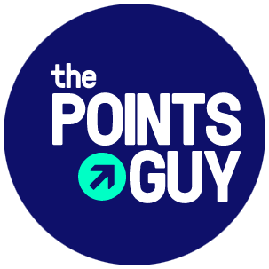
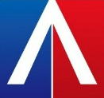
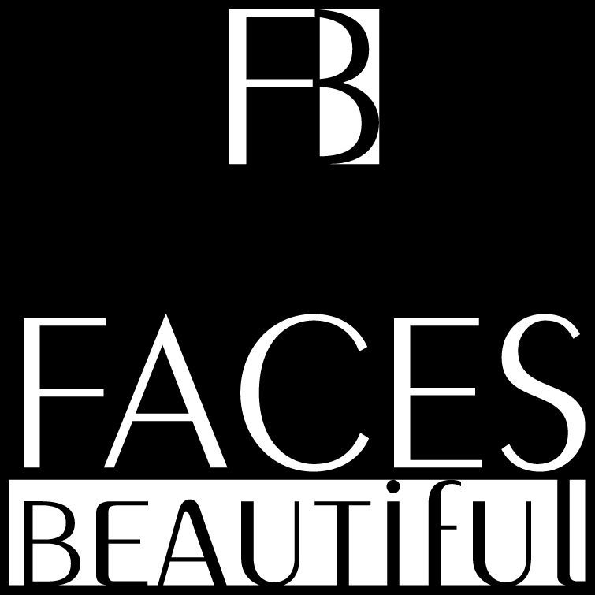

I was only 15 years old when my passion for online branding sprouted. I had just started my own YouTube channel for makeup artistry and loved analyzing the feedback data just as much as making the art itself. From then on, I pursued the idea of working in digital marketing and social media. I worked as a freelancer for the past 5 years for various companies, every time proving to my clients that social media needs strategy. My most recent position is working with some of the top influencers in media, news, and entertainment.
In my time assisting companies in digital marketing, I have successfully boosted their engagement and reach on platforms such as Facebook, Twitter, Instagram, YouTube, Pinterest, and LinkedIn through comprehensive social strategy. Alongside that, my years of experience in photo and video work has allowed me to improve their social posts and websites with better quality media. Companies I have worked with include Fullscreen Media (New York, NY), The Points Guy (New York, NY), By Jill Diamond (New York, NY), Affineco (Bridgeport, CT), and Faces Beautiful (Westport, CT).
  